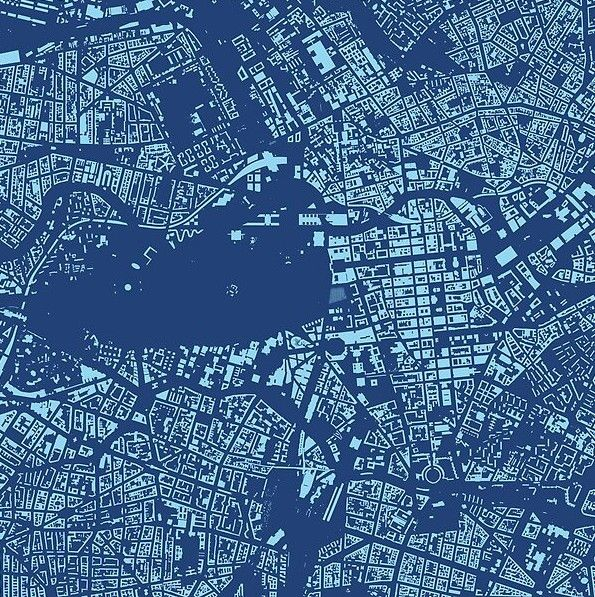
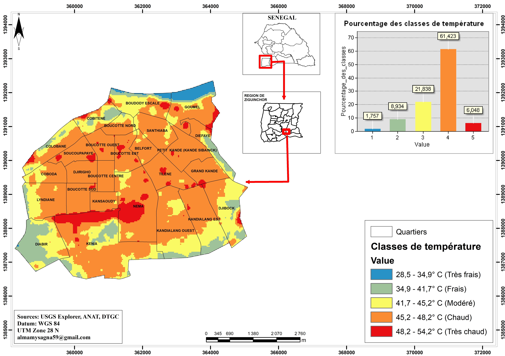
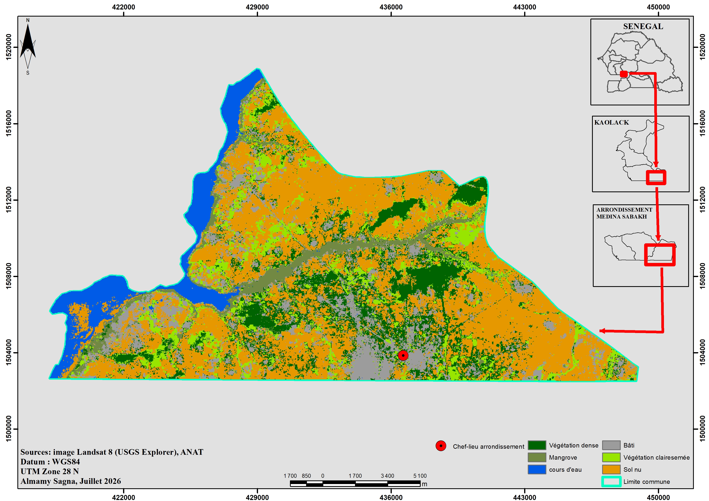
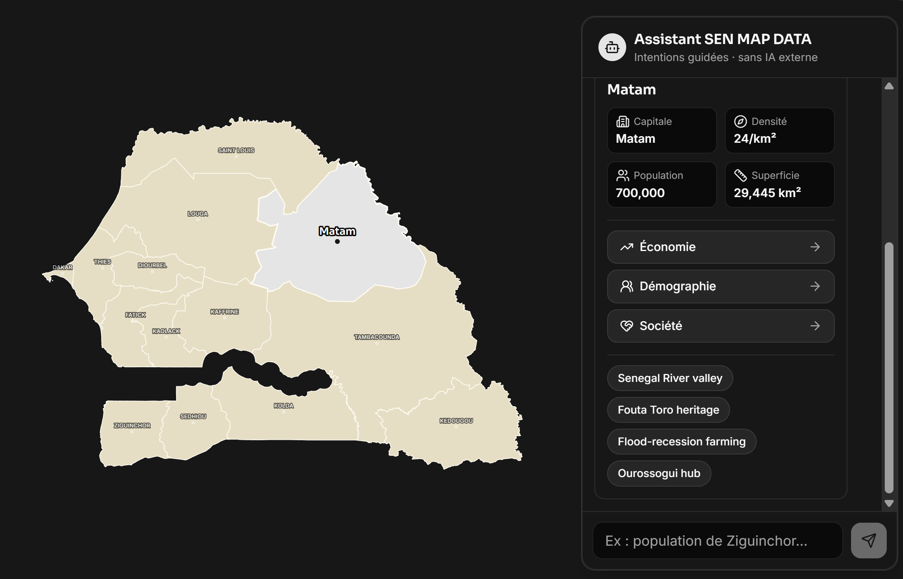

Télédétection & SIG
Potentiel de restauration agroforestière
Projet de cartographie des zones agroforestiers à prioriser en terme de restauration dans la commune de Djibidione commune du département de Bignona
Géographe | Spécialiste SIG
Étudiant en master 2 de géographie, parcours Environnement-Territoire-Population-Santé et passionné par la géomatique, je conçois des cartes et des analyses spatiales pour comprendre et représenter les dynamiques territoriales.

Une sélection de travaux en SIG, télédétection et analyse spatiale.
Projet de cartographie des zones agroforestiers à prioriser en terme de restauration dans la commune de Djibidione commune du département de Bignona

Réalisé dans le cadre du hackathon se SENSAT intitulé du "données à la satellite", ce projet a été parmi les 10 finaliste sur une centaine de candidatures. L'objectif été d'apporter des solutions à la forte chaleur constaté à Ziguinchor dans le cadre de mon mémoire.

Cartes réalisées dans le cadre de mon mémoire pour analyser les dynamiques terittoriales dans la commune de Ziguinchor et l'accéssibilité aux structures sanitaires.

Collecte de données sur terrain de quelques unités économiques, traitement des données géospatiales, projections sur images satellitaires.

Projet d'équipe réaliser dans le cadre du hackathon de l'ANSD (édition 2026). On a réalisé une carte interactive du sénégal avec un modèle de chat bot pour faciliter l'accès et l'utilisation des données de l'ANSD au public.
Géographe spécialisé en SIG, je termine un Master en Géographie (Environnement, Territoire, Population et Santé) à l’UCAD. Mon mémoire porte sur la vulnérabilité au changement climatique et la résilience du système de santé à Ziguinchor. J’ai travaillé comme prestataire à l’ANSD, où j’ai pratiqué la collecte de terrain et la cartographie. J’ai aussi participé à des projets comme SEN MAP DATA, une plateforme cartographique interactive basée sur les données du RGPH-5, et au hackathon SENSAT sur la chaleur urbaine. Je poursuis une formation en Data Science pour mieux analyser les données géospatiales. Je veux mettre l’analyse spatiale et la donnée au service du climat, de l’environnement et de la santé, au sein d’ONG, d’organisations internationales ou du secteur privé. À terme, j’aimerais contribuer à la création d’un bureau régional de résilience climatique à Ziguinchor. Centres d’intérêt: Géographie de la santé, climat et environnement, cartographie, télédétection, data science et aide à la décision. En dehors du travail, je pratique le judo.>